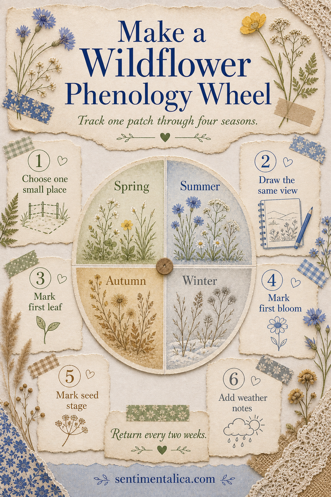
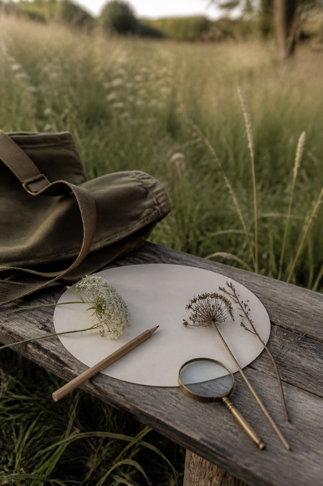

A phenology wheel records when natural events happen: the first leaf, first bloom, seed stage, and winter rest. Instead of collecting many unrelated flowers, return to one small patch and let a single journal page show how it changes through the year.

Choose a place you can revisit
Select one verge, garden corner, meadow edge, or woodland opening. It should be small enough to draw from the same viewpoint and accessible in every season. Photograph the first view, note the date and direction you faced, then divide a circle into Spring, Summer, Autumn, and Winter.
Record events, not perfect identification
Every two weeks, add a tiny drawing or written mark. Notice first leaves, first open flowers, peak bloom, seed heads, dieback, frost, rainfall, and visible insects. If you do not know a species name, describe its form and color. Consistent observation matters more than an immediate label.

Keep the same visual language
Use one pencil for outlines and a restrained seasonal palette: fresh green, cornflower blue, seed brown, and winter gray. Place weather notes at the outer rim so the plant drawings remain easy to compare. Leave a central circle for the location name and year.
Let printable imagery support the record
Your observations should remain the heart of the page, but a botanical border or small watercolor flower can connect the seasons. Browse the Sentimentalica printable image collections for coordinated botanical imagery, then use it sparingly beside your own dates and field notes.
Visuals in this article were created with AI assistance and art-directed for Sentimentalica.
Find more nature-led journaling in the Sentimentalica journal archive.